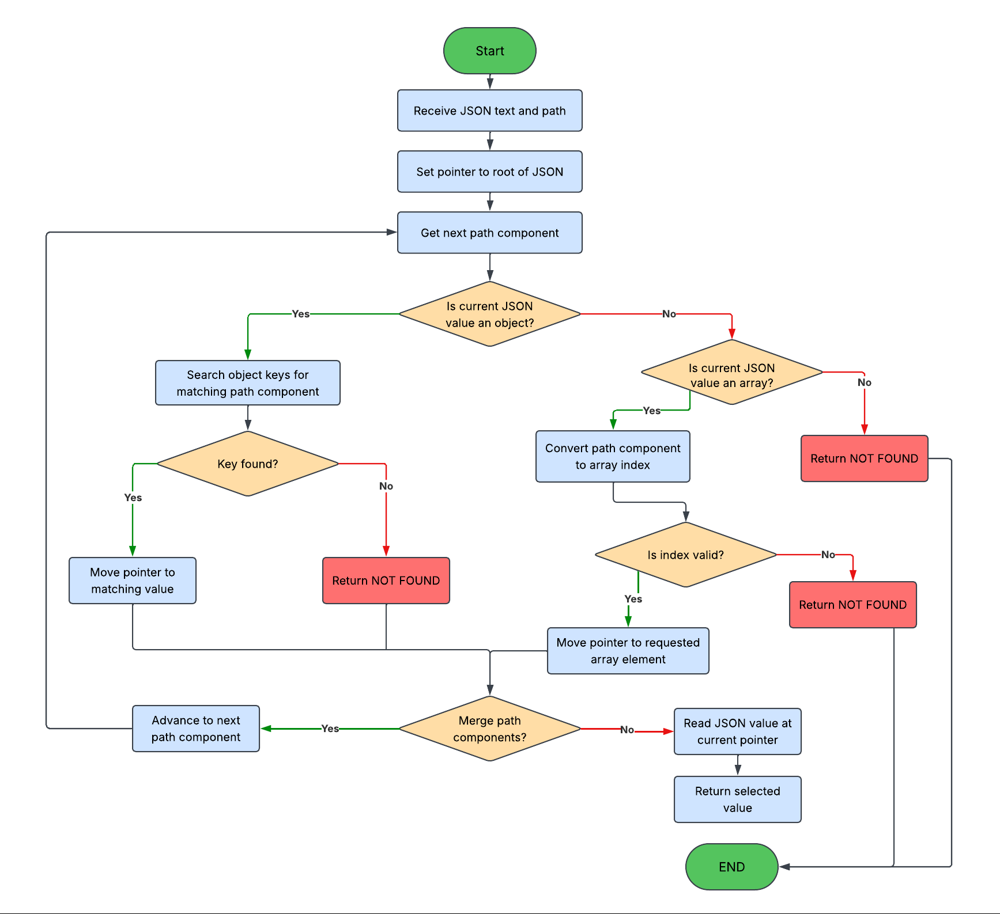
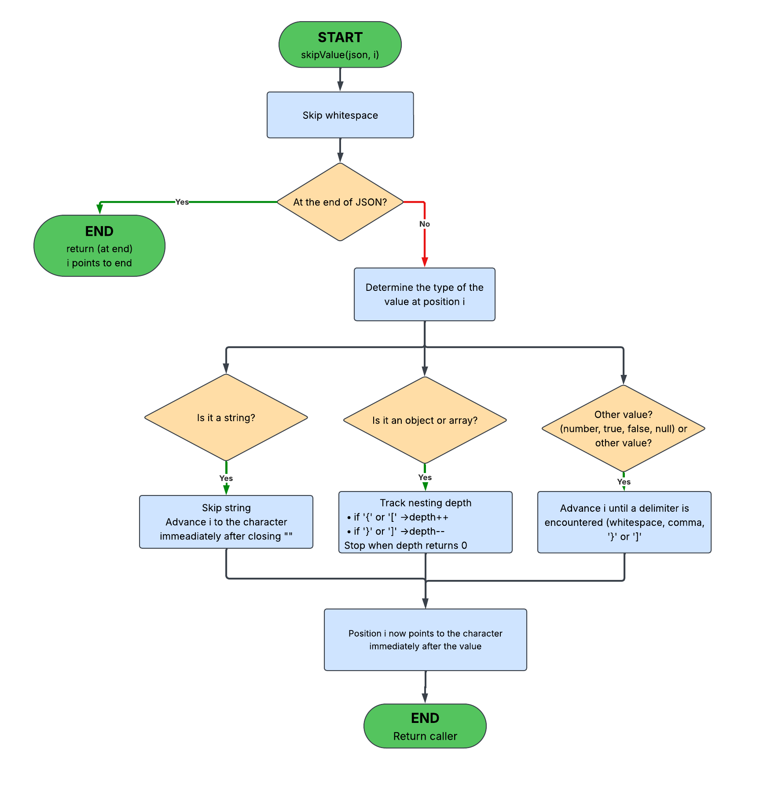
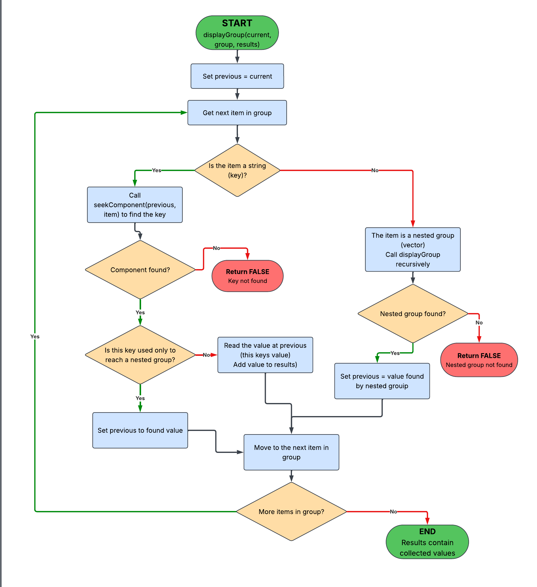

Algorithms
The JSON Query Engine uses recursive query parsing and direct character-level JSON traversal. This page explains how raw query text becomes a structured command and how FIND, DISPLAY, and FILTER execute against the JSON document.
Terminology Used on This Page
Two different structures are involved during execution: the parsed query and the JSON document. They should not be confused.
Query Component
A query component is one element of the parsed query representation.
It may be:
- A string such as
users. - An array index token such as
1. - A nested group of more query components.
JSON Value
A JSON value is part of the document being searched. It may be:
- An object.
- An array.
- A string.
- A number.
- A Boolean.
null.
Algorithm Overview
Query execution can be divided into several reusable algorithms.
1. Query Parsing
Convert raw text into nested
JSONType components and command metadata.
2. Component Lookup
Locate an object key or array index within the current JSON container.
3. Value Skipping
Move past an entire JSON value without fully decoding it.
4. FIND
Recursively verify that every requested target exists.
5. DISPLAY
Recursively navigate to requested values and collect them.
6. FILTER
Navigate to an array and retain elements whose selected field satisfies a regex or numeric condition.
Query Parsing
Query parsing begins in:
queryparser::parsequery()The goal is to turn a raw string such as:
DISPLAY {"users" {1 {"name" "email"}}}
into a recursive ParsedQuery.
Main Parsing Rules
| Input Character | Parser Action |
|---|---|
| Space | Finish the current unquoted token if one is being accumulated. |
{ |
Start a recursive nested query group. |
" |
Read a quoted token while preserving spaces and escape sequences. |
} |
Close the current nested group. |
| Other characters | Append them to the current token. |
Pseudocode
function parseQuery(query):
clear previous parsed query
reset command and filter metadata
currentToken = ""
for each character in query:
if character is a space:
if currentToken is not empty:
append currentToken
clear currentToken
else if character is "{":
recursively parse nested group
else if character is a quote:
parse a quoted token
else if character is "}":
validate matching opening brace
else:
append character to currentToken
append final token if needed
validate that all braces were closed
read first parsed token as command
if command is FILTER:
determine whether the filter is regex or numericRecursive Nested Groups
The helper parsenested() performs essentially the
same scan inside a pair of braces. When another
{ appears, it calls itself recursively.
This is what allows a query such as:
DISPLAY {"users" {1 {"profile" {"location" {"city"}}}}}to retain its hierarchy instead of being flattened.
Quoted Tokens
parsequoted() reads from one double quotation mark
to its matching closing quotation mark.
This is necessary because JSON keys can contain spaces:
DISPLAY {"employee records" {"full name"}}The spaces inside the quotation marks belong to the key and therefore must not split the token.

JSON Component Lookup
The central JSON navigation helper is:
seekComponent()It receives:
- A pointer to the current JSON container.
- A pointer to the end of the document.
-
One requested query component such as
users,profile, or1.
Its job is to move the JSON pointer to the value named by that component.

Object Case
If the current JSON value begins with {, the query
component is treated as an object key.
function seekComponent(object, wantedKey):
enter object
while another key can be read:
read next JSON key
move past ":"
if key equals wantedKey:
return success
// pointer now sits at the key's value
skip the entire unmatched value
if there is another member:
continue
otherwise:
return failureArray Case
If the current JSON value begins with [, the query
component must be a numeric array index.
function seekComponent(array, wantedIndex):
convert query component to integer index
if conversion fails:
return failure
enter array
repeat wantedIndex times:
skip one complete JSON value
require a comma before the next element
return success
// pointer now sits at requested array elementseekComponent() does not recursively process the
entire query. It performs exactly one level of navigation.
Higher-level algorithms repeatedly call it as needed.
Skipping a Complete JSON Value
One of the most important low-level helpers is:
skipValue()It moves a pointer from the beginning of a JSON value to the first character after that value.

Why It Is Needed
Suppose the engine is searching this object:
{
"profile": {
"bio": "...",
"preferences": { ... }
},
"score": 78.25
}
If the query wants score, the engine does not need
to fully interpret profile. It can skip the complete
profile object and continue scanning.
Pseudocode
function skipValue(pointer):
skip whitespace
if value starts with quote:
skip one JSON string
return
if value starts with "{" or "[":
depth = 0
repeat:
if next item is a string:
skip the string
continue
if next character opens object or array:
depth++
else if next character closes object or array:
depth--
advance pointer
until depth == 0
return
otherwise:
// number, true, false, or null
advance until whitespace or JSON delimiterStrings Inside Containers
Strings receive special handling while container depth is being counted because braces and brackets inside quoted strings are data, not JSON structure.
{
"message": "This text contains { brackets }"
}Without skipping quoted strings correctly, those characters could incorrectly change the nesting depth.
FIND Algorithm
FIND executes through:
findGroup()The algorithm recursively processes the parsed query group. It does not iterate over the JSON document as if each query element were a JSON item.

Key Idea
Every sibling string in a group is searched from the same JSON container.
A nested query group descends from the JSON value found by the string immediately before that nested group.
Example
FIND {"users" {1 {"profile" {"location" {"city"}}}}}The recursive execution is:
-
Search the root object for
users. -
Descend into the value of
users. -
Search that array for index
1. - Descend into user 1.
-
Search for
profile. -
Continue recursively through
locationandcity. -
Return
trueonly if every requested component is found.
Pseudocode
function findGroup(container, queryGroup):
previousValue = container
for each queryComponent in queryGroup:
if queryComponent is a string:
search from container for that component
if component does not exist:
return false
previousValue = located JSON value
else if queryComponent is a nested group:
if findGroup(previousValue, nestedGroup) is false:
return false
return trueSibling Behavior
Consider:
FIND {"meta" "users"}
Both meta and users are searched from
the root object. The second string does not descend from the first.
false.
DISPLAY Algorithm
DISPLAY is implemented by:
displayGroup()Its traversal behavior resembles FIND, but instead of only checking existence it collects the JSON text of requested leaf values.

Navigation Values vs. Output Values
A string query component can play one of two roles.
Navigation Component
If a nested query group immediately follows the string, the string identifies where recursion should continue.
"profile" { ... }Output Component
If no nested group immediately follows the string, its JSON value is copied into the result list.
"name" "email"Pseudocode
function displayGroup(container, queryGroup, results):
previousValue = container
for each queryComponent:
if component is a nested group:
recursively display from previousValue
if recursion fails:
return false
continue
search from container for the string component
if component is missing:
return false
previousValue = located JSON value
if next query component is a nested group:
// this value is navigation only
continue
start = current JSON pointer
skip the complete JSON value
copy JSON text from start to pointer
convert Unicode escapes if needed
append value to results
return trueExample
DISPLAY {"users" {1 {"name" "email" "score" "active"}}}
The engine navigates through users and array index
1. Then each of the four sibling leaf keys is located
from the same user object and copied into the result vector.
["Marco Ruiz", "marco@example.com", 78.25, true]FILTER Algorithm
FILTER combines navigation with repeated evaluation of array elements.
The main helpers are:
filterGroup()
getWantedKey()
reachArray()
searchArray()
Stage 1: Determine the Field to Test
getWantedKey() recursively walks the parsed FILTER
query group and determines the final field that will be tested.
For:
FILTER {"users" {"score"}} 70 80the target field is:
scoreStage 2: Reach the Array
reachArray() follows the earlier components of the
query until the JSON pointer reaches the array containing the
objects to filter.
In this example:
FILTER {"users" {"score"}} 70 80
the array being searched is users.
Stage 3: Search Each Array Element
searchArray() examines each array element independently.
function searchArray(array, wantedField, condition):
enter array
for each element:
remember start of entire element
search a temporary pointer for wantedField
if field exists:
read field value
if value satisfies condition:
mark element as matching
return to beginning of element
skip entire element
if matching:
copy complete element into results
return resultsNumeric Range FILTER
Numeric FILTER receives a lower and upper bound.
FILTER {"users" {"score"}} 70 80The field value is converted to a number and tested with:
lowerBound <= value && value <= upperBoundTherefore the range is inclusive.
Regular Expression FILTER
Regex FILTER receives the user-provided expression after the query group.
FILTER {"users" {"name"}} "^M"For each user object:
- Locate the
namevalue. - Read the string value.
- Remove the surrounding JSON quotation marks.
- Apply the regular expression supplied by the query.
- If it matches, copy the complete user object into the result.
regex_search(fieldValue, userPattern)
With ^M, the user named
Marco Ruiz matches because the string begins with M.
Unicode and Escaped String Handling
JSON strings can contain escaped Unicode values such as:
\u0041The JSON parser uses several helpers to normalize these values:
scanStringSpan()
Finds the complete contents of a quoted JSON string and identifies whether escape sequences are present.
readHex4()
Reads four hexadecimal digits from a
\uXXXX sequence.
appendUtf8()
Encodes a Unicode code point into one or more UTF-8 bytes.
convertUnicode()
Scans returned JSON text and converts Unicode escapes into UTF-8 output.
Surrogate Pairs
UTF-16 surrogate pairs require two
\uXXXX sequences to represent one Unicode code point.
When a leading surrogate is detected, the next escape is read and validated as the matching trailing surrogate. The pair is then combined before UTF-8 encoding.
high surrogate + low surrogate
↓
Unicode code point
↓
UTF-8Result Formatting
DISPLAY and FILTER store successful results in a
std::vector<std::string>. The helper:
joinValues()converts that vector into the final result string.
One Value
"Marco Ruiz"A single result is returned directly.
Multiple Values
["Austin", "TX", "78701"]Multiple results are joined into a JSON-style array.
Pseudocode
function joinValues(values):
if values contains exactly one item:
return that item
output = "["
for each value:
append comma when needed
append value
append "]"
return outputCommand Dispatch
After query parsing, the public
parsejson(json, ParsedQuery) function dispatches
execution based on the parsed command.
switch command:
FIND:
run findGroup()
return "true" or "false"
DISPLAY:
run displayGroup()
return joined collected values
FILTER:
run filterGroup()
return joined matching elements
otherwise:
report unsupported queryThis keeps command selection separate from the detailed algorithms used by each operation.
Algorithmic Characteristics
The engine performs direct scans of JSON text instead of creating a searchable object tree first. As a result, lookup cost depends on where the requested data appears in the current container.
Object Lookup
Object members are scanned sequentially until the requested key is found.
Array Lookup
Elements before a requested index are skipped sequentially.
FILTER
FILTER examines each element of the selected array and searches that element for the requested field.
Memory Usage
Queries avoid building a complete parsed JSON object tree, although returned values and matched elements are copied into result strings.
Algorithm-to-Function Map
| Algorithm | Main Function(s) | Source File |
|---|---|---|
| Raw query parsing |
parsequery(),
parsenested(),
parsequoted()
|
src/queryparser.cpp
|
| JSON component lookup |
seekComponent()
|
src/jsonparser.cpp
|
| Linear path lookup |
seekValue()
|
src/jsonparser.cpp
|
| Skip one JSON value |
skipValue(),
skipString()
|
src/jsonparser.cpp
|
| FIND |
findGroup()
|
src/jsonparser.cpp
|
| DISPLAY |
displayGroup(),
joinValues()
|
src/jsonparser.cpp
|
| FILTER navigation |
filterGroup(),
getWantedKey(),
reachArray()
|
src/jsonparser.cpp
|
| FILTER evaluation |
searchArray()
|
src/jsonparser.cpp
|
| Unicode conversion |
convertUnicode(),
readHex4(),
appendUtf8()
|
src/jsonparser.cpp
|
Continue Exploring
These algorithms describe how queries execute. The next pages show how that behavior is tested and how the implementation performs on larger JSON documents.
Testing
See how parsing, traversal, Unicode, edge cases, and query behavior are verified.
View testing →Performance
Review benchmark results and how the direct-scanning design behaves as JSON file size increases.
View performance →Limitations
Review the current boundaries and unsupported behaviors of the query engine.
View limitations →